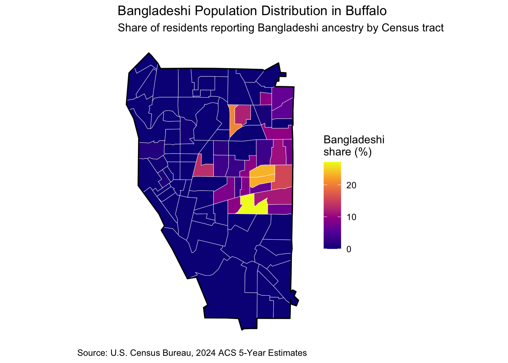
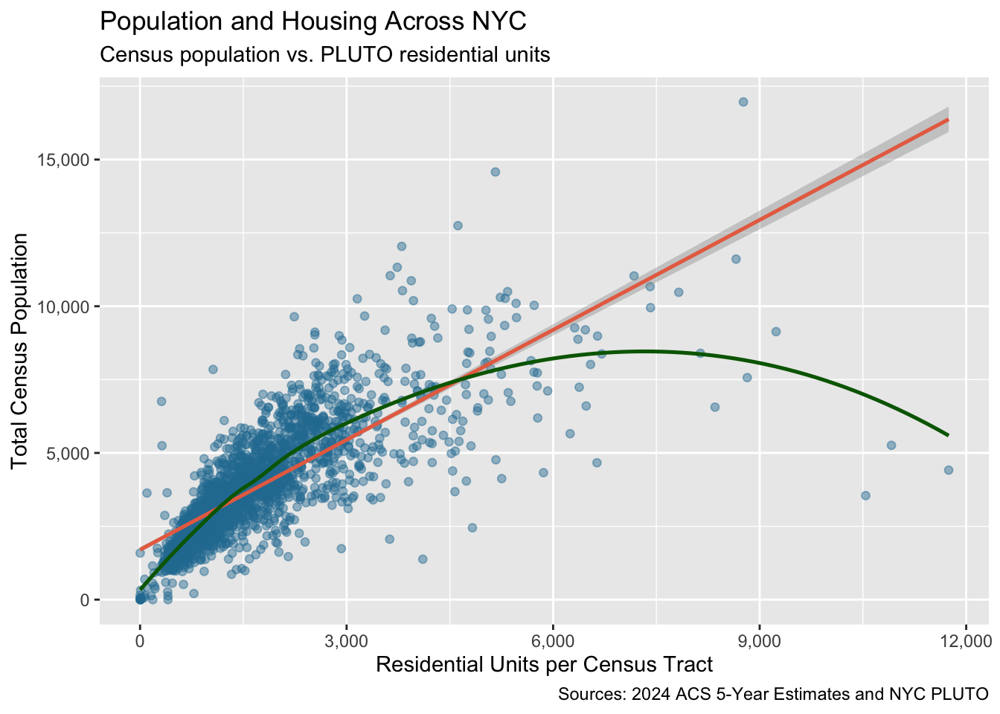
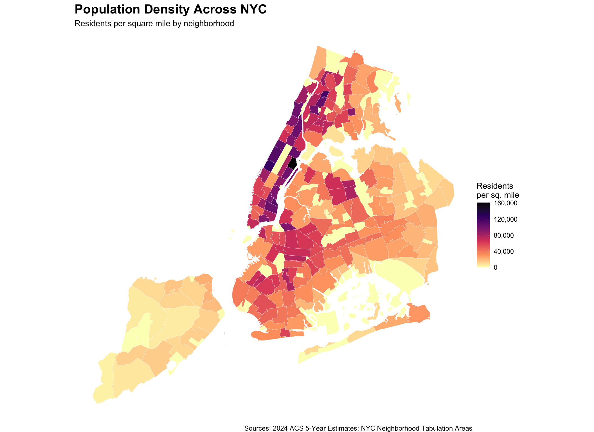
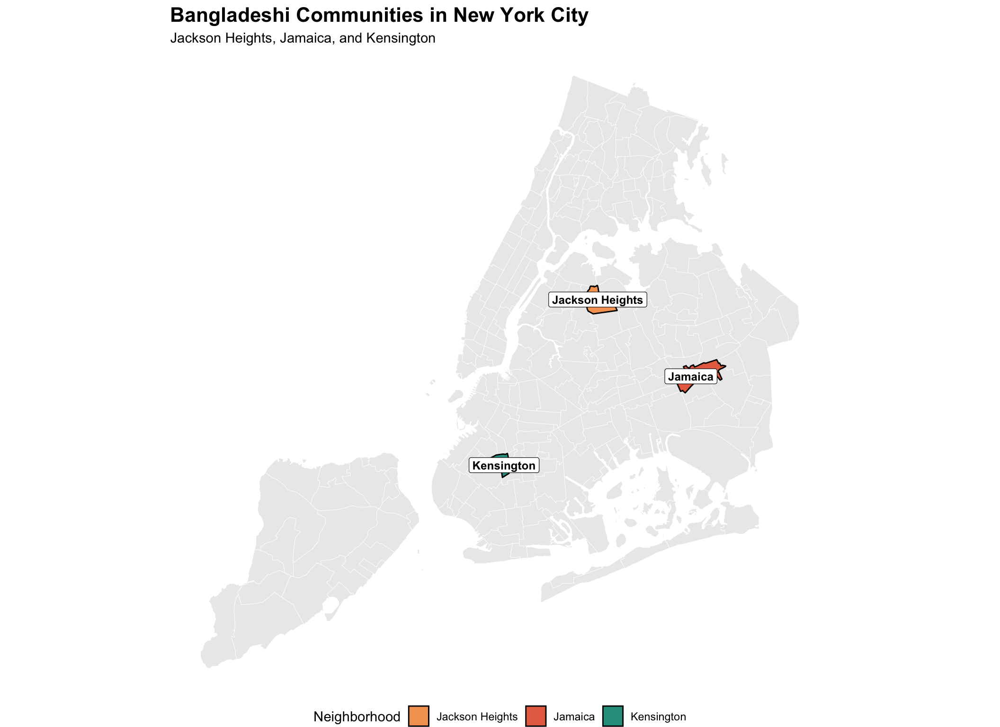
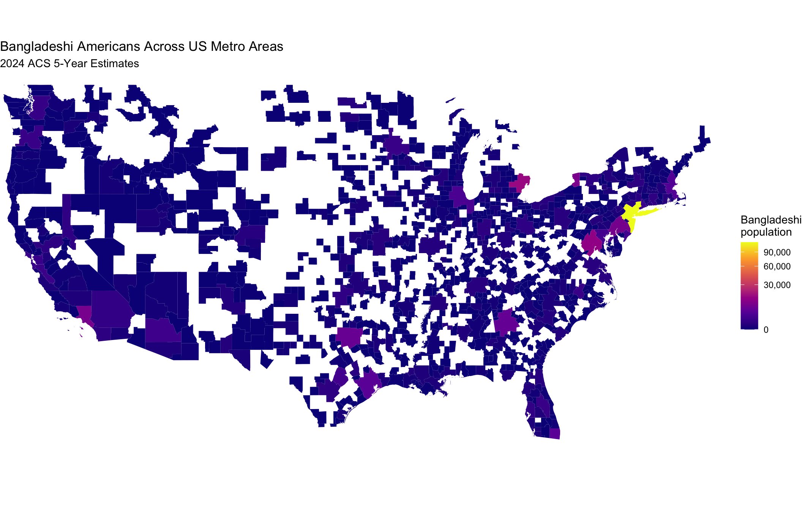

Show Code
library(tidyverse)
library(tidycensus)
library(sf)
library(gt)
library(httr2)
dir.create(
"data/mp03",
recursive = TRUE,
showWarnings = FALSE
)Maria Rashid
I will be doing research on a community that I am a part of, as I will be able to personally resonate to it. As someone whole is a Bangladeshi Americans I would like to know about other bangladeshi communities, particularly in New York City neighborhoods and Buffalo, New York. When people want to settle in the United States, they take into consideration housing availability and population patterns. Through this project, I will also be examining population density as it allows us to determine the amount of people in a particular area. This is useful as people can come to a decision when considering the area they want to settle in. My analysis will be collected from the 2024 American Community Survey (ACS) 5-year estimates, NYC Neighborhood Tabulation Areas (NTAs), and NYC PLUTO property data. Through this project, the data collected will help compare Bangladeshi American populations across NYC as well as U.S. metro areas.
# Create folder for saved Census data
dir.create(
"data/mp03",
recursive = TRUE,
showWarnings = FALSE
)
# Save data locally to avoid repeated downloads
cbsa_file <- "data/mp03/cbsa_population_acs5.rds"
if (file.exists(cbsa_file)) {
cbsa_population <- readRDS(cbsa_file)
} else {
cbsa_population <- tidycensus::get_acs(
geography = "cbsa",
variables = c(
total_population = "B01003_001",
bangladeshi_population = "B02015_022"
),
year = 2024,
survey = "acs5",
output = "wide"
)
saveRDS(cbsa_population, cbsa_file)
}
# Calculate Bangladeshi population percentages
cbsa_population <- cbsa_population |>
dplyr::mutate(
bangladeshi_percentage =
100 * bangladeshi_populationE / total_populationE
)
# Select metropolitan areas with the highest percentages
top_bangladeshi_metros <- cbsa_population |>
dplyr::filter(
stringr::str_detect(NAME, "Metro Area$"),
!is.na(bangladeshi_percentage),
total_populationE > 0
) |>
dplyr::arrange(
dplyr::desc(bangladeshi_percentage)
) |>
dplyr::slice_head(n = 10)
# Create professional table
top_bangladeshi_metros |>
dplyr::mutate(
NAME = stringr::str_remove(NAME, " Metro Area$")
) |>
dplyr::select(
NAME,
total_populationE,
bangladeshi_populationE,
bangladeshi_percentage
) |>
gt::gt() |>
gt::tab_header(
title = "Metropolitan Areas with the Highest Bangladeshi Population Share",
subtitle = "2024 American Community Survey, 5-Year Estimates"
) |>
gt::cols_label(
NAME = "Metropolitan Area",
total_populationE = "Total Population",
bangladeshi_populationE = "Bangladeshi Population",
bangladeshi_percentage = "Bangladeshi Share (%)"
) |>
gt::fmt_number(
columns = c(
total_populationE,
bangladeshi_populationE
),
decimals = 0
) |>
gt::fmt_number(
columns = bangladeshi_percentage,
decimals = 3
) |>
gt::tab_options(
table.font.size = gt::px(13),
data_row.padding = gt::px(8)
) |>
gt::tab_source_note(
source_note = "Source: U.S. Census Bureau, 2024 ACS 5-Year Estimates."
)| Metropolitan Areas with the Highest Bangladeshi Population Share | |||
| 2024 American Community Survey, 5-Year Estimates | |||
| Metropolitan Area | Total Population | Bangladeshi Population | Bangladeshi Share (%) |
|---|---|---|---|
| Buffalo-Cheektowaga, NY | 1,161,343 | 9,846 | 0.848 |
| Atlantic City-Hammonton, NJ | 371,211 | 2,290 | 0.617 |
| New York-Newark-Jersey City, NY-NJ | 19,798,537 | 113,957 | 0.576 |
| Grand Forks, ND-MN | 103,628 | 416 | 0.401 |
| Detroit-Warren-Dearborn, MI | 4,376,828 | 16,276 | 0.372 |
| Ithaca, NY | 104,537 | 292 | 0.279 |
| Ames, IA | 127,134 | 314 | 0.247 |
| Washington-Arlington-Alexandria, DC-VA-MD-WV | 6,318,377 | 14,280 | 0.226 |
| Kalamazoo-Portage, MI | 262,375 | 532 | 0.203 |
| Manhattan, KS | 133,965 | 268 | 0.200 |
| Source: U.S. Census Bureau, 2024 ACS 5-Year Estimates. | |||
This dataset is collected from 2024 ACS 5-year estimates that can be used to compare the percentage of Bangladeshi American populations across top 10 U.S. metro areas. From the results we are able to determine that the metropolitan area with the highest Bangladeshi population share is Buffalo-Cheektowaga, NY Metro Area with a share of 0.848% The higher percentage represents that Bangladeshi Americans make up a larger portion of the total population in that area.
# File location for cached NYC census tract data
nyc_tract_file <- "data/mp03/nyc_census_tracts.rds"
# Download data only if a saved copy does not exist
if (file.exists(nyc_tract_file)) {
nyc_tracts <- readRDS(nyc_tract_file)
} else {
# NYC consists of five counties
nyc_counties <- c(
"Bronx",
"Kings",
"New York",
"Queens",
"Richmond"
)
# Download 2024 ACS 5-year tract data with geometry
nyc_tracts <- tidycensus::get_acs(
geography = "tract",
variables = c(
total_population = "B01003_001",
bangladeshi_population = "B02015_022"
),
state = "NY",
county = nyc_counties,
year = 2024,
survey = "acs5",
geometry = TRUE,
output = "wide"
)
# Save locally for future use
saveRDS(nyc_tracts, nyc_tract_file)
}
# Calculate Bangladeshi population percentages
nyc_tracts <- nyc_tracts |>
dplyr::mutate(
bangladeshi_percentage = dplyr::if_else(
total_populationE > 0,
100 * bangladeshi_populationE / total_populationE,
NA_real_
)
)
# Verify number of tracts and missing values without printing
nyc_tract_summary <- nyc_tracts |>
sf::st_drop_geometry() |>
dplyr::summarise(
total_tracts = dplyr::n(),
available_bangladeshi = sum(
!is.na(bangladeshi_populationE)
),
missing_bangladeshi = sum(
is.na(bangladeshi_populationE)
)
)After performing checks on the NYC census tract data, I found that there is a total of 2,327 census tracts in NYC with 0 missing values in regards to the Bangladeshi population estimates.
# Function to download and load NYC 2020 NTA boundaries
load_nyc_nta <- function() {
data_dir <- "data/mp03"
zip_file <- file.path(
data_dir,
"nyc_nta_2020.zip"
)
cache_file <- file.path(
data_dir,
"nyc_nta_2020_shapefile.rds"
)
unzip_dir <- file.path(
data_dir,
"nta_shapefile"
)
# Official NYC Planning 2020 NTA shapefile
zip_url <- paste0(
"https://s-media.nyc.gov/agencies/dcp/assets/",
"files/zip/data-tools/bytes/",
"neighborhood-tabulation-areas/",
"nynta2020_26c.zip"
)
# Create data folder
dir.create(
data_dir,
recursive = TRUE,
showWarnings = FALSE
)
# Load cached data if available
if (file.exists(cache_file)) {
return(readRDS(cache_file))
}
# Automatically download ZIP if missing
if (!file.exists(zip_file)) {
response <- httr2::request(zip_url) |>
httr2::req_perform()
writeBin(
httr2::resp_body_raw(response),
zip_file
)
}
# Extract shapefile
dir.create(
unzip_dir,
recursive = TRUE,
showWarnings = FALSE
)
utils::unzip(
zip_file,
exdir = unzip_dir
)
# Find shapefile
shp_files <- list.files(
unzip_dir,
pattern = "\\.shp$",
recursive = TRUE,
full.names = TRUE,
ignore.case = TRUE
)
if (length(shp_files) == 0) {
stop("No shapefile found inside the ZIP.")
}
# Read geographic boundaries
nyc_nta <- sf::st_read(
shp_files[1],
quiet = TRUE
)
# Standardize column names
names(nyc_nta) <- tolower(names(nyc_nta))
# Keep necessary columns
nyc_nta <- nyc_nta |>
dplyr::select(
nta2020,
ntaname,
boroname,
ntatype,
geometry
)
# Save processed data
saveRDS(nyc_nta, cache_file)
return(nyc_nta)
}
# Load NYC NTA data
nyc_nta <- load_nyc_nta()
# Verify that the function returns an sf object
stopifnot(inherits(nyc_nta, "sf"))The NYC NTA dataset contained a total of 262 neighborhood areas. This dataset is used to analyze Bangladeshi communities across NYC neighborhoods. The columns that was unnecessary was removed to keep the data set organized. The only remaining columns include neighborhood names, neighborhood type. neighborhood ID , borough names, and geographic boundaries.
The census tracts were matched to NYC neighborhoods, and unmatched tracts were identified. In an effort to calculate the total population, we added together the population counts from all census tracts assigned to each NTA. To calculate the Bangladeshi population, we added together the Bangladeshi population counts from those same census tracts.
# Make sure both geographic datasets use the same CRS
nyc_nta <- sf::st_transform(
nyc_nta,
sf::st_crs(nyc_tracts)
)
# Keep only the NTA identifier for the spatial join
nta_boundaries <- nyc_nta |>
dplyr::select(nta2020)
# Assign each census tract to the NTA
# with which it has the largest overlap
tracts_with_nta <- sf::st_join(
nyc_tracts,
nta_boundaries,
largest = TRUE,
left = TRUE
)
# Check that all census tracts received an NTA
tract_join_check <- tracts_with_nta |>
sf::st_drop_geometry() |>
dplyr::summarise(
total_tracts = dplyr::n(),
matched_tracts = sum(!is.na(nta2020)),
unmatched_tracts = sum(is.na(nta2020))
)
# Aggregate census tract populations to NTAs
nta_population_summary <- tracts_with_nta |>
sf::st_drop_geometry() |>
dplyr::filter(!is.na(nta2020)) |>
dplyr::group_by(nta2020) |>
dplyr::summarise(
total_population = sum(
total_populationE,
na.rm = TRUE
),
bangladeshi_population = sum(
bangladeshi_populationE,
na.rm = TRUE
),
tract_count = dplyr::n(),
.groups = "drop"
) |>
dplyr::mutate(
bangladeshi_percentage = dplyr::if_else(
total_population > 0,
100 * bangladeshi_population / total_population,
NA_real_
)
)
# Join aggregated populations back to NTA boundaries
nyc_nta_population <- nyc_nta |>
dplyr::left_join(
nta_population_summary,
by = "nta2020"
)
# Verify the result without printing output
nta_verification_summary <- nyc_nta_population |>
sf::st_drop_geometry() |>
dplyr::summarise(
total_ntas = dplyr::n(),
ntas_with_population = sum(
!is.na(total_population)
),
ntas_without_population = sum(
is.na(total_population)
),
total_bangladeshi = sum(
bangladeshi_population,
na.rm = TRUE
)
)The PLUTO data was downloaded in batches of 25,000 records. These records provide insight about NYC buildings and properties, which can be used to compare neighborhoods where Bangladeshi communities live. This dataset was saved as CSV to avoid downloading it repeatedly.
# Create folder for saved PLUTO data
dir.create(
"data/mp03",
recursive = TRUE,
showWarnings = FALSE
)
# File used to cache the downloaded data
pluto_file <- "data/mp03/nyc_pluto.csv"
# Official NYC Open Data PLUTO API
pluto_url <- paste0(
"https://data.cityofnewyork.us/resource/",
"64uk-42ks.csv"
)
# Function to download PLUTO data in batches
load_nyc_pluto <- function() {
# Use previously downloaded data
if (file.exists(pluto_file)) {
return(
readr::read_csv(
pluto_file,
col_types = readr::cols(
bbl = readr::col_character(),
bct2020 = readr::col_character(),
.default = readr::col_guess()
),
show_col_types = FALSE
)
)
}
# Download 25,000 records at a time
batch_size <- 25000
offset <- 0
batches <- list()
repeat {
response <- httr2::request(pluto_url) |>
httr2::req_url_query(
`$select` = paste(
"bbl",
"bct2020",
"officearea",
"resarea",
"unitsres",
"numfloors",
"landuse",
sep = ","
),
`$order` = "bbl",
`$limit` = batch_size,
`$offset` = offset
) |>
httr2::req_retry(max_tries = 3) |>
httr2::req_perform()
# Read downloaded CSV batch
batch <- readr::read_csv(
I(httr2::resp_body_string(response)),
col_types = readr::cols(
bbl = readr::col_character(),
bct2020 = readr::col_character(),
.default = readr::col_guess()
),
show_col_types = FALSE
)
# Stop when no more records are available
if (nrow(batch) == 0) {
break
}
batches[[length(batches) + 1]] <- batch
message(
"Downloaded ",
offset + nrow(batch),
" PLUTO records"
)
if (nrow(batch) < batch_size) {
break
}
offset <- offset + batch_size
}
# Combine all downloaded batches
pluto_data <- dplyr::bind_rows(batches)
if (nrow(pluto_data) == 0) {
stop("No PLUTO records were downloaded.")
}
# Save completed download locally
readr::write_csv(pluto_data, pluto_file)
return(pluto_data)
}
# Download or load NYC PLUTO data
nyc_pluto <- load_nyc_pluto()
# Verify the dataset without printing output
pluto_download_summary <- nyc_pluto |>
dplyr::summarise(
total_properties = dplyr::n(),
properties_with_tract = sum(!is.na(bct2020)),
properties_with_office_area = sum(!is.na(officearea)),
properties_with_residential_units = sum(!is.na(unitsres))
)
# Verify required columns are present
stopifnot(
all(c(
"bbl", "bct2020", "officearea", "resarea",
"unitsres", "numfloors", "landuse"
) %in% names(nyc_pluto))
)# Clean PLUTO data without removing original records
nyc_pluto_clean <- nyc_pluto |>
dplyr::mutate(
bbl = as.character(bbl),
bct2020 = stringr::str_pad(
as.character(bct2020),
width = 6,
side = "left",
pad = "0"
),
dplyr::across(
c(officearea, resarea, unitsres, numfloors),
~ readr::parse_number(as.character(.x))
),
landuse = as.character(landuse)
) |>
dplyr::mutate(
# Preserve missing values instead of treating them as zero
officearea = dplyr::if_else(
officearea < 0,
NA_real_,
officearea
),
resarea = dplyr::if_else(
resarea < 0,
NA_real_,
resarea
),
unitsres = dplyr::if_else(
unitsres < 0,
NA_real_,
unitsres
),
numfloors = dplyr::if_else(
numfloors < 0,
NA_real_,
numfloors
)
)
# Check missing values after cleaning
pluto_missing_summary <- nyc_pluto_clean |>
dplyr::summarise(
total_properties = dplyr::n(),
missing_tract = sum(is.na(bct2020)),
missing_office_area = sum(is.na(officearea)),
missing_residential_area = sum(is.na(resarea)),
missing_residential_units = sum(is.na(unitsres)),
missing_floors = sum(is.na(numfloors))
)# Convert PLUTO borough + tract IDs to 11-digit Census GEOIDs
nyc_pluto_clean <- nyc_pluto_clean |>
dplyr::mutate(
borough_code = substr(bct2020, 1, 1),
tract_code = substr(bct2020, 2, 7),
county_fips = dplyr::case_when(
borough_code == "1" ~ "061", # Manhattan
borough_code == "2" ~ "005", # Bronx
borough_code == "3" ~ "047", # Brooklyn
borough_code == "4" ~ "081", # Queens
borough_code == "5" ~ "085", # Staten Island
TRUE ~ NA_character_
),
GEOID = dplyr::if_else(
!is.na(county_fips),
paste0("36", county_fips, tract_code),
NA_character_
)
)
# Check whether PLUTO tract IDs match Census tract IDs
pluto_tract_check <- nyc_pluto_clean |>
dplyr::summarise(
total_properties = dplyr::n(),
valid_geoid = sum(!is.na(GEOID)),
missing_geoid = sum(is.na(GEOID)),
geoid_length = paste(
sort(unique(nchar(GEOID[!is.na(GEOID)]))),
collapse = ", "
),
matched_to_census = sum(
GEOID %in% nyc_tracts$GEOID
)
)# Calculate total office floor area by census tract
office_area_by_tract <- nyc_pluto_clean |>
dplyr::filter(
!is.na(GEOID),
!is.na(officearea)
) |>
dplyr::group_by(GEOID) |>
dplyr::summarise(
total_office_area = sum(officearea),
property_count = dplyr::n(),
.groups = "drop"
) |>
dplyr::arrange(dplyr::desc(total_office_area))
# Identify the tract with the most office floor area
top_office_tract <- office_area_by_tract |>
dplyr::slice_max(
order_by = total_office_area,
n = 1,
with_ties = FALSE
)
# Create a formatted table of the top 10 census tracts
office_area_by_tract |>
dplyr::slice_head(n = 10) |>
dplyr::mutate(rank = dplyr::row_number()) |>
dplyr::select(
rank,
GEOID,
total_office_area,
property_count
) |>
gt::gt() |>
gt::tab_header(
title = "Top 10 NYC Census Tracts by Office Floor Area",
subtitle = "Based on NYC PLUTO property records"
) |>
gt::cols_label(
rank = "Rank",
GEOID = "Census Tract GEOID",
total_office_area = "Total Office Area (sq. ft.)",
property_count = "Properties with Reported Office Area"
) |>
gt::fmt_number(
columns = c(total_office_area, property_count),
decimals = 0
)| Top 10 NYC Census Tracts by Office Floor Area | |||
| Based on NYC PLUTO property records | |||
| Rank | Census Tract GEOID | Total Office Area (sq. ft.) | Properties with Reported Office Area |
|---|---|---|---|
| 1 | 36061000900 | 18,354,103 | 89 |
| 2 | 36061001300 | 16,889,181 | 74 |
| 3 | 36061011300 | 15,679,979 | 98 |
| 4 | 36061009400 | 15,433,200 | 84 |
| 5 | 36061000700 | 14,608,640 | 60 |
| 6 | 36061009200 | 13,488,814 | 68 |
| 7 | 36061010200 | 13,441,011 | 95 |
| 8 | 36061010900 | 13,395,785 | 116 |
| 9 | 36061013100 | 12,579,261 | 52 |
| 10 | 36061009903 | 11,911,713 | 32 |
The NYC census tract with the most office floor area is 36061000900.
# Create a unique census tract to NTA lookup
tract_nta_lookup <- tracts_with_nta |>
sf::st_drop_geometry() |>
dplyr::select(GEOID, nta2020) |>
dplyr::distinct(GEOID, .keep_all = TRUE)
# Match PLUTO properties to NTAs using census tract GEOIDs
pluto_with_nta <- nyc_pluto_clean |>
dplyr::left_join(
tract_nta_lookup,
by = "GEOID"
)
# Calculate residential units by NTA
residential_units_by_nta <- pluto_with_nta |>
dplyr::filter(
!is.na(nta2020),
!is.na(unitsres)
) |>
dplyr::group_by(nta2020) |>
dplyr::summarise(
total_residential_units = sum(unitsres),
properties_counted = dplyr::n(),
.groups = "drop"
) |>
dplyr::left_join(
nyc_nta |>
sf::st_drop_geometry() |>
dplyr::select(nta2020, ntaname, boroname),
by = "nta2020"
) |>
dplyr::arrange(
dplyr::desc(total_residential_units)
)
# Display the NTA with the most residential units
top_residential_nta <- residential_units_by_nta |>
dplyr::slice_head(n = 1)
# Create a formatted table
residential_units_by_nta |>
dplyr::slice_head(n = 10) |>
dplyr::mutate(rank = dplyr::row_number()) |>
dplyr::select(
rank,
ntaname,
boroname,
total_residential_units,
properties_counted
) |>
gt::gt() |>
gt::tab_header(
title = "Top 10 NYC Neighborhoods by Residential Units",
subtitle = "Residential units reported in NYC PLUTO"
) |>
gt::cols_label(
rank = "Rank",
ntaname = "Neighborhood",
boroname = "Borough",
total_residential_units = "Residential Units",
properties_counted = "Properties Counted"
) |>
gt::fmt_number(
columns = c(total_residential_units, properties_counted),
decimals = 0
)| Top 10 NYC Neighborhoods by Residential Units | ||||
| Residential units reported in NYC PLUTO | ||||
| Rank | Neighborhood | Borough | Residential Units | Properties Counted |
|---|---|---|---|---|
| 1 | Upper East Side-Lenox Hill-Roosevelt Island | Manhattan | 60,306 | 1,363 |
| 2 | Upper West Side (Central) | Manhattan | 57,314 | 2,597 |
| 3 | Upper East Side-Yorkville | Manhattan | 50,986 | 1,512 |
| 4 | Chelsea-Hudson Yards | Manhattan | 46,130 | 1,949 |
| 5 | Upper West Side-Lincoln Square | Manhattan | 45,384 | 937 |
| 6 | Forest Hills | Queens | 43,687 | 7,544 |
| 7 | Murray Hill-Kips Bay | Manhattan | 42,824 | 1,172 |
| 8 | Hell's Kitchen | Manhattan | 40,309 | 1,448 |
| 9 | East Village | Manhattan | 40,193 | 2,290 |
| 10 | Upper East Side-Carnegie Hill | Manhattan | 40,064 | 2,589 |
Upper East Side-Lenox Hill-Roosevelt Island is the NYC neighborhood with the most residential units.
# Question 3:
# Which census tract has the highest population
# per residential square foot and per residential unit?
# Do the rankings differ?
# --------------------------------------------------
# 1. Aggregate PLUTO housing data by census tract
# --------------------------------------------------
tract_housing <- nyc_pluto_clean |>
dplyr::filter(!is.na(GEOID)) |>
dplyr::group_by(GEOID) |>
dplyr::summarise(
residential_area = sum(resarea, na.rm = TRUE),
residential_units = sum(unitsres, na.rm = TRUE),
properties = dplyr::n(),
.groups = "drop"
)
# --------------------------------------------------
# 2. Join Census population with PLUTO housing data
# --------------------------------------------------
tract_population_density <- nyc_tracts |>
sf::st_drop_geometry() |>
dplyr::select(
GEOID,
NAME,
total_populationE
) |>
dplyr::left_join(
tract_housing,
by = "GEOID"
) |>
dplyr::mutate(
population_per_residential_sqft =
dplyr::if_else(
residential_area > 0,
total_populationE / residential_area,
NA_real_
),
population_per_residential_unit =
dplyr::if_else(
residential_units > 0,
total_populationE / residential_units,
NA_real_
)
)
# --------------------------------------------------
# 3. Find the original population-density winners
# --------------------------------------------------
top_density_sqft <- tract_population_density |>
dplyr::filter(
total_populationE > 0,
!is.na(population_per_residential_sqft)
) |>
dplyr::slice_max(
population_per_residential_sqft,
n = 1,
with_ties = FALSE
)
top_density_units <- tract_population_density |>
dplyr::filter(
total_populationE > 0,
!is.na(population_per_residential_unit)
) |>
dplyr::slice_max(
population_per_residential_unit,
n = 1,
with_ties = FALSE
)
# --------------------------------------------------
# 4. Download Census group-quarters population
# --------------------------------------------------
group_quarters_file <-
"data/mp03/nyc_group_quarters_acs5.rds"
if (file.exists(group_quarters_file)) {
nyc_group_quarters <- readRDS(group_quarters_file)
} else {
nyc_group_quarters <- tidycensus::get_acs(
geography = "tract",
state = "NY",
county = c(
"Bronx",
"Kings",
"New York",
"Queens",
"Richmond"
),
variables = c(
group_quarters = "B26001_001"
),
year = 2024,
survey = "acs5"
) |>
dplyr::select(
GEOID,
group_quarters_population = estimate
)
saveRDS(
nyc_group_quarters,
group_quarters_file
)
}
# --------------------------------------------------
# 5. Calculate household population
# --------------------------------------------------
tract_household_density <- tract_population_density |>
dplyr::left_join(
nyc_group_quarters,
by = "GEOID"
) |>
dplyr::mutate(
household_population =
total_populationE - group_quarters_population,
household_population_per_sqft =
dplyr::if_else(
household_population > 0 &
residential_area > 0,
household_population / residential_area,
NA_real_
),
household_population_per_unit =
dplyr::if_else(
household_population > 0 &
residential_units > 0,
household_population / residential_units,
NA_real_
)
)
# --------------------------------------------------
# 6. Find household-population density winners
# --------------------------------------------------
top_household_sqft <- tract_household_density |>
dplyr::filter(
!is.na(household_population_per_sqft)
) |>
dplyr::slice_max(
household_population_per_sqft,
n = 1,
with_ties = FALSE
)
top_household_units <- tract_household_density |>
dplyr::filter(
!is.na(household_population_per_unit)
) |>
dplyr::slice_max(
household_population_per_unit,
n = 1,
with_ties = FALSE
)
# --------------------------------------------------
# 7. Create comparison table
# --------------------------------------------------
density_comparison <- dplyr::bind_rows(
top_density_sqft |>
dplyr::transmute(
measurement = "Total population per residential sq. ft.",
GEOID,
tract = NAME,
population = total_populationE,
housing_measure = residential_area,
ratio = population_per_residential_sqft
),
top_density_units |>
dplyr::transmute(
measurement = "Total population per residential unit",
GEOID,
tract = NAME,
population = total_populationE,
housing_measure = residential_units,
ratio = population_per_residential_unit
),
top_household_sqft |>
dplyr::transmute(
measurement = "Household population per residential sq. ft.",
GEOID,
tract = NAME,
population = household_population,
housing_measure = residential_area,
ratio = household_population_per_sqft
),
top_household_units |>
dplyr::transmute(
measurement = "Household population per residential unit",
GEOID,
tract = NAME,
population = household_population,
housing_measure = residential_units,
ratio = household_population_per_unit
)
)
# --------------------------------------------------
# 8. Display formatted comparison table
# --------------------------------------------------
density_comparison |>
gt::gt() |>
gt::tab_header(
title = "NYC Census Tracts with the Highest Population-to-Housing Ratios",
subtitle = "Comparing total population and household population"
) |>
gt::cols_label(
measurement = "Measurement",
GEOID = "Census Tract GEOID",
tract = "Census Tract",
population = "Population",
housing_measure = "Housing Denominator",
ratio = "Population-to-Housing Ratio"
) |>
gt::fmt_number(
columns = c(population, housing_measure),
decimals = 0
) |>
gt::fmt_number(
columns = ratio,
decimals = 4
)| NYC Census Tracts with the Highest Population-to-Housing Ratios | |||||
| Comparing total population and household population | |||||
| Measurement | Census Tract GEOID | Census Tract | Population | Housing Denominator | Population-to-Housing Ratio |
|---|---|---|---|---|---|
| Total population per residential sq. ft. | 36047001801 | Census Tract 18.01; Kings County; New York | 1,588 | 6,709 | 0.2367 |
| Total population per residential unit | 36047001801 | Census Tract 18.01; Kings County; New York | 1,588 | 2 | 794.0000 |
| Household population per residential sq. ft. | 36005027600 | Census Tract 276; Bronx County; New York | 154 | 1,326 | 0.1161 |
| Household population per residential unit | 36005027600 | Census Tract 276; Bronx County; New York | 154 | 1 | 154.0000 |
# --------------------------------------------------
# 9. Check whether the rankings differ
# --------------------------------------------------
ranking_comparison <- tibble::tibble(
population_type = c(
"Total population",
"Household population"
),
same_winning_tract = c(
top_density_sqft$GEOID == top_density_units$GEOID,
top_household_sqft$GEOID == top_household_units$GEOID
)
)36047001801 is the NYC census tract with the highest population density, and the population per square foot of residential space is 0.2367. The answer does not change if I measure by population per residential unit.
# Load the Census metro data saved in Task 1
cbsa_population <- readRDS(
"data/mp03/cbsa_population_acs5.rds"
)
# Calculate Bangladeshi population share
top_five_metros <- cbsa_population |>
dplyr::filter(
stringr::str_detect(NAME, "Metro Area$"),
!stringr::str_detect(
NAME,
"^New York-Newark-Jersey City,"
),
!is.na(total_populationE),
!is.na(bangladeshi_populationE),
total_populationE > 0
) |>
dplyr::mutate(
bangladeshi_percentage =
100 * bangladeshi_populationE / total_populationE
) |>
dplyr::arrange(
dplyr::desc(bangladeshi_percentage)
) |>
dplyr::slice_head(n = 5) |>
dplyr::mutate(
rank = dplyr::row_number()
)
# Display the top five metropolitan areas
top_five_metros |>
dplyr::select(
rank,
NAME,
total_populationE,
bangladeshi_populationE,
bangladeshi_percentage
) |>
gt::gt() |>
gt::tab_header(
title = "Top 5 Metro Areas by Bangladeshi Population Share",
subtitle = "Excluding the New York metropolitan area | 2024 ACS 5-Year Estimates"
) |>
gt::cols_label(
rank = "Rank",
NAME = "Metropolitan Area",
total_populationE = "Total Population",
bangladeshi_populationE = "Bangladeshi Population",
bangladeshi_percentage = "Bangladeshi Share (%)"
) |>
gt::fmt_number(
columns = c(
total_populationE,
bangladeshi_populationE
),
decimals = 0
) |>
gt::fmt_number(
columns = bangladeshi_percentage,
decimals = 3
)| Top 5 Metro Areas by Bangladeshi Population Share | ||||
| Excluding the New York metropolitan area | 2024 ACS 5-Year Estimates | ||||
| Rank | Metropolitan Area | Total Population | Bangladeshi Population | Bangladeshi Share (%) |
|---|---|---|---|---|
| 1 | Buffalo-Cheektowaga, NY Metro Area | 1,161,343 | 9,846 | 0.848 |
| 2 | Atlantic City-Hammonton, NJ Metro Area | 371,211 | 2,290 | 0.617 |
| 3 | Grand Forks, ND-MN Metro Area | 103,628 | 416 | 0.401 |
| 4 | Detroit-Warren-Dearborn, MI Metro Area | 4,376,828 | 16,276 | 0.372 |
| 5 | Ithaca, NY Metro Area | 104,537 | 292 | 0.279 |
The top five metropolitan areas outside NYC by Bangladeshi population share are Buffalo-Cheektowaga, NY Metro Area, Atlantic City-Hammonton, NJ Metro Area, Grand Forks, ND-MN Metro Area, Detroit-Warren-Dearborn, MI Metro Area, Ithaca, NY Metro Area.
# --------------------------------------------------
# 1. Download Census tract data for Erie County
# --------------------------------------------------
buffalo_file <- "data/mp03/buffalo_tracts_acs5.rds"
if (file.exists(buffalo_file)) {
erie_tracts <- readRDS(buffalo_file)
} else {
erie_tracts <- tidycensus::get_acs(
geography = "tract",
state = "NY",
county = "Erie",
variables = c(
total_population = "B01003_001",
bangladeshi_population = "B02015_022"
),
year = 2024,
survey = "acs5",
geometry = TRUE,
output = "wide"
)
saveRDS(erie_tracts, buffalo_file)
}
# --------------------------------------------------
# 2. Get the Buffalo city boundary
# --------------------------------------------------
buffalo_boundary_file <- "data/mp03/buffalo_city_boundary.rds"
if (file.exists(buffalo_boundary_file)) {
buffalo_boundary <- readRDS(buffalo_boundary_file)
} else {
buffalo_boundary <- tigris::places(
state = "NY",
year = 2024,
cb = TRUE,
class = "sf"
) |>
dplyr::filter(NAME == "Buffalo") |>
dplyr::select(NAME, geometry)
saveRDS(buffalo_boundary, buffalo_boundary_file)
}
# --------------------------------------------------
# 3. Identify Census tracts in Buffalo
# --------------------------------------------------
buffalo_boundary <- sf::st_transform(
buffalo_boundary,
sf::st_crs(erie_tracts)
)
# Assign each tract based on its point on surface
erie_tract_points <- sf::st_point_on_surface(
erie_tracts
)
buffalo_tracts <- erie_tracts[
lengths(
sf::st_intersects(
erie_tract_points,
buffalo_boundary
)
) > 0,
]
# --------------------------------------------------
# 4. Calculate Bangladeshi population percentages
# --------------------------------------------------
buffalo_tracts <- buffalo_tracts |>
dplyr::mutate(
bangladeshi_percentage = dplyr::if_else(
total_populationE > 0 &
!is.na(bangladeshi_populationE),
100 * bangladeshi_populationE / total_populationE,
NA_real_
)
)
# --------------------------------------------------
# 5. Create a table of the top 10 Census tracts
# --------------------------------------------------
buffalo_top_tracts <- buffalo_tracts |>
sf::st_drop_geometry() |>
dplyr::filter(
!is.na(bangladeshi_percentage)
) |>
dplyr::arrange(
dplyr::desc(bangladeshi_percentage)
) |>
dplyr::slice_head(n = 10)
buffalo_top_tracts |>
dplyr::select(
NAME,
total_populationE,
bangladeshi_populationE,
bangladeshi_percentage
) |>
gt::gt() |>
gt::tab_header(
title = "Top 10 Buffalo Census Tracts by Bangladeshi Population Share",
subtitle = "2024 ACS 5-Year Estimates"
) |>
gt::cols_label(
NAME = "Census Tract",
total_populationE = "Total Population",
bangladeshi_populationE = "Bangladeshi Population",
bangladeshi_percentage = "Bangladeshi Share (%)"
) |>
gt::fmt_number(
columns = c(
total_populationE,
bangladeshi_populationE
),
decimals = 0
) |>
gt::fmt_number(
columns = bangladeshi_percentage,
decimals = 2
)| Top 10 Buffalo Census Tracts by Bangladeshi Population Share | |||
| 2024 ACS 5-Year Estimates | |||
| Census Tract | Total Population | Bangladeshi Population | Bangladeshi Share (%) |
|---|---|---|---|
| Census Tract 16.01; Erie County; New York | 1,841 | 500 | 27.16 |
| Census Tract 29; Erie County; New York | 2,572 | 600 | 23.33 |
| Census Tract 28.02; Erie County; New York | 1,150 | 263 | 22.87 |
| Census Tract 40.02; Erie County; New York | 1,665 | 340 | 20.42 |
| Census Tract 30; Erie County; New York | 2,730 | 428 | 15.68 |
| Census Tract 168.01; Erie County; New York | 2,094 | 279 | 13.32 |
| Census Tract 40.03; Erie County; New York | 2,930 | 354 | 12.08 |
| Census Tract 24; Erie County; New York | 5,021 | 574 | 11.43 |
| Census Tract 37; Erie County; New York | 4,655 | 497 | 10.68 |
| Census Tract 41; Erie County; New York | 4,137 | 396 | 9.57 |
# --------------------------------------------------
# 6. Create a map of Bangladeshi population share
# --------------------------------------------------
ggplot2::ggplot(buffalo_tracts) +
ggplot2::geom_sf(
ggplot2::aes(fill = bangladeshi_percentage),
color = "white",
linewidth = 0.15
) +
ggplot2::geom_sf(
data = buffalo_boundary,
fill = NA,
color = "black",
linewidth = 0.6
) +
ggplot2::scale_fill_viridis_c(
option = "plasma",
na.value = "grey90",
name = "Bangladeshi\nshare (%)"
) +
ggplot2::coord_sf(
datum = NA
) +
ggplot2::labs(
title = "Bangladeshi Population Distribution in Buffalo",
subtitle = "Share of residents reporting Bangladeshi ancestry by Census tract",
caption = "Source: U.S. Census Bureau, 2024 ACS 5-Year Estimates"
) +
ggplot2::theme_minimal()
# --------------------------------------------------
# 7. Verify the results without printing output
# --------------------------------------------------
buffalo_summary <- buffalo_tracts |>
sf::st_drop_geometry() |>
dplyr::summarise(
total_tracts = dplyr::n(),
tracts_with_estimates = sum(
!is.na(bangladeshi_populationE)
),
estimated_bangladeshi_population = sum(
bangladeshi_populationE,
na.rm = TRUE
)
)The Census tract with the highest Bangladeshi population share is Census Tract 16.01; Erie County; New York with a share of 27.16%.
# 1. Create data directory
dir.create("data/mp03", recursive = TRUE, showWarnings = FALSE)
# 2. Download and cache US Bangladeshi population
us_file <- "data/mp03/us_bangladeshi_acs5.rds"
if (file.exists(us_file)) {
us_bangladeshi <- readRDS(us_file)
} else {
us_bangladeshi <- tidycensus::get_acs(
geography = "us",
variables = c(bangladeshi_population = "B02015_022"),
year = 2024,
survey = "acs5",
output = "wide"
)
saveRDS(us_bangladeshi, us_file)
}
us_bangladeshi_total <- us_bangladeshi$bangladeshi_populationE[1]
if (length(us_bangladeshi_total) != 1 ||
is.na(us_bangladeshi_total) ||
us_bangladeshi_total <= 0) {
stop("Invalid national Bangladeshi population estimate.")
}
# 3. Download and cache New York State population
ny_file <- "data/mp03/ny_state_bangladeshi_acs5.rds"
if (file.exists(ny_file)) {
ny_state_bangladeshi <- readRDS(ny_file)
} else {
ny_state_bangladeshi <- tidycensus::get_acs(
geography = "state",
state = "NY",
variables = c(bangladeshi_population = "B02015_022"),
year = 2024,
survey = "acs5",
output = "wide"
)
saveRDS(ny_state_bangladeshi, ny_file)
}
ny_state_total <- ny_state_bangladeshi$bangladeshi_populationE[1]
if (length(ny_state_total) != 1 ||
is.na(ny_state_total) ||
ny_state_total < 0) {
stop("Invalid New York State Bangladeshi estimate.")
}
ny_state_share_percent <-
100 * ny_state_total / us_bangladeshi_total
# 4. Load metropolitan area data from Task 1
cbsa_population <- readRDS(
"data/mp03/cbsa_population_acs5.rds"
)
# 5. Calculate each metro area's share of US Bangladeshis
metro_national_shares <- cbsa_population |>
dplyr::filter(
stringr::str_detect(NAME, "Metro Area\\s*$"),
!is.na(bangladeshi_populationE),
bangladeshi_populationE >= 0
) |>
dplyr::mutate(
share_of_us_bangladeshis =
100 * bangladeshi_populationE / us_bangladeshi_total
) |>
dplyr::arrange(
dplyr::desc(share_of_us_bangladeshis)
)
if (nrow(metro_national_shares) == 0) {
stop("No metropolitan areas found. Check CBSA names.")
}
# 6. Identify New York metropolitan area
nyc_metro_share <- metro_national_shares |>
dplyr::filter(
stringr::str_detect(
NAME,
"^New York-Newark-Jersey City"
)
)
if (nrow(nyc_metro_share) != 1) {
stop("Expected exactly one New York metropolitan area.")
}
# 7. Identify top 10 metropolitan areas
top_10_national_metros <- metro_national_shares |>
dplyr::slice_head(n = 10) |>
dplyr::mutate(rank = dplyr::row_number())
# 8. Identify other major metropolitan areas
other_major_metros <- metro_national_shares |>
dplyr::filter(
!stringr::str_detect(
NAME,
"^New York-Newark-Jersey City"
)
) |>
dplyr::slice_head(n = 10) |>
dplyr::mutate(rank = dplyr::row_number())
# 9. Display top 10 metropolitan areas
top_10_national_metros |>
dplyr::select(
rank,
NAME,
bangladeshi_populationE,
share_of_us_bangladeshis
) |>
gt::gt() |>
gt::tab_header(
title = "Top 10 US Metropolitan Areas by Bangladeshi Population",
subtitle = "2024 ACS 5-Year Estimates"
) |>
gt::cols_label(
rank = "Rank",
NAME = "Metropolitan Area",
bangladeshi_populationE = "Bangladeshi Population",
share_of_us_bangladeshis = "Share of US Bangladeshis (%)"
) |>
gt::fmt_number(
columns = bangladeshi_populationE,
decimals = 0
) |>
gt::fmt_number(
columns = share_of_us_bangladeshis,
decimals = 2
)| Top 10 US Metropolitan Areas by Bangladeshi Population | |||
| 2024 ACS 5-Year Estimates | |||
| Rank | Metropolitan Area | Bangladeshi Population | Share of US Bangladeshis (%) |
|---|---|---|---|
| 1 | New York-Newark-Jersey City, NY-NJ Metro Area | 113,957 | 43.28 |
| 2 | Detroit-Warren-Dearborn, MI Metro Area | 16,276 | 6.18 |
| 3 | Washington-Arlington-Alexandria, DC-VA-MD-WV Metro Area | 14,280 | 5.42 |
| 4 | Buffalo-Cheektowaga, NY Metro Area | 9,846 | 3.74 |
| 5 | Los Angeles-Long Beach-Anaheim, CA Metro Area | 9,330 | 3.54 |
| 6 | Philadelphia-Camden-Wilmington, PA-NJ-DE-MD Metro Area | 9,018 | 3.43 |
| 7 | Dallas-Fort Worth-Arlington, TX Metro Area | 6,757 | 2.57 |
| 8 | Atlanta-Sandy Springs-Roswell, GA Metro Area | 6,346 | 2.41 |
| 9 | Miami-Fort Lauderdale-West Palm Beach, FL Metro Area | 5,101 | 1.94 |
| 10 | Houston-Pasadena-The Woodlands, TX Metro Area | 5,005 | 1.90 |
# 10. Display other major metropolitan areas
other_major_metros |>
dplyr::select(
rank,
NAME,
bangladeshi_populationE,
share_of_us_bangladeshis
) |>
gt::gt() |>
gt::tab_header(
title = "Major Metropolitan Areas Outside New York Metro",
subtitle = "Share of the US Bangladeshi Population"
) |>
gt::cols_label(
rank = "Rank",
NAME = "Metropolitan Area",
bangladeshi_populationE = "Bangladeshi Population",
share_of_us_bangladeshis = "Share of US Bangladeshis (%)"
) |>
gt::fmt_number(
columns = bangladeshi_populationE,
decimals = 0
) |>
gt::fmt_number(
columns = share_of_us_bangladeshis,
decimals = 2
)| Major Metropolitan Areas Outside New York Metro | |||
| Share of the US Bangladeshi Population | |||
| Rank | Metropolitan Area | Bangladeshi Population | Share of US Bangladeshis (%) |
|---|---|---|---|
| 1 | Detroit-Warren-Dearborn, MI Metro Area | 16,276 | 6.18 |
| 2 | Washington-Arlington-Alexandria, DC-VA-MD-WV Metro Area | 14,280 | 5.42 |
| 3 | Buffalo-Cheektowaga, NY Metro Area | 9,846 | 3.74 |
| 4 | Los Angeles-Long Beach-Anaheim, CA Metro Area | 9,330 | 3.54 |
| 5 | Philadelphia-Camden-Wilmington, PA-NJ-DE-MD Metro Area | 9,018 | 3.43 |
| 6 | Dallas-Fort Worth-Arlington, TX Metro Area | 6,757 | 2.57 |
| 7 | Atlanta-Sandy Springs-Roswell, GA Metro Area | 6,346 | 2.41 |
| 8 | Miami-Fort Lauderdale-West Palm Beach, FL Metro Area | 5,101 | 1.94 |
| 9 | Houston-Pasadena-The Woodlands, TX Metro Area | 5,005 | 1.90 |
| 10 | Boston-Cambridge-Newton, MA-NH Metro Area | 4,150 | 1.58 |
# 11. Calculate summary statistics
national_share_summary <- tibble::tibble(
us_bangladeshi_population = us_bangladeshi_total,
ny_state_bangladeshi_population = ny_state_total,
ny_state_share_percent = ny_state_share_percent,
nyc_metro_bangladeshi_population =
nyc_metro_share$bangladeshi_populationE[1],
nyc_metro_share_percent =
nyc_metro_share$share_of_us_bangladeshis[1],
top_10_metro_share_percent =
sum(top_10_national_metros$share_of_us_bangladeshis)
)
# 12. Compare New York State and New York Metro
new_york_comparison <- tibble::tibble(
location = c(
"New York State",
"New York Metropolitan Area"
),
bangladeshi_population = c(
ny_state_total,
nyc_metro_share$bangladeshi_populationE[1]
),
national_share_percent = c(
ny_state_share_percent,
nyc_metro_share$share_of_us_bangladeshis[1]
)
)
new_york_comparison |>
gt::gt() |>
gt::tab_header(
title = "Bangladeshi Americans Living in New York",
subtitle = "Percentage of All US Bangladeshi Americans"
) |>
gt::cols_label(
location = "Location",
bangladeshi_population = "Bangladeshi Population",
national_share_percent = "Share of US Bangladeshis (%)"
) |>
gt::fmt_number(
columns = bangladeshi_population,
decimals = 0
) |>
gt::fmt_number(
columns = national_share_percent,
decimals = 2
)| Bangladeshi Americans Living in New York | ||
| Percentage of All US Bangladeshi Americans | ||
| Location | Bangladeshi Population | Share of US Bangladeshis (%) |
|---|---|---|
| New York State | 120,404 | 45.73 |
| New York Metropolitan Area | 113,957 | 43.28 |
45.73% of all Bangladeshi Americans live in New York State, and 43.28% live in the New York metropolitan area. Some of the shares of all Bangladeshi Americans nationwide include Detroit (6.18%), Washington, D.C. (5.42%), Buffalo (3.74%), Los Angeles (3.54%), and Philadelphia (3.43%).
# Prepare census tract population and housing data
population_housing_data <- tract_population_density |>
dplyr::filter(
!is.na(total_populationE),
!is.na(residential_units),
residential_units > 0,
total_populationE >= 0
)
# Calculate the correlation between population and housing
population_housing_correlation <- cor(
population_housing_data$total_populationE,
population_housing_data$residential_units,
use = "complete.obs"
)
# Save the correlation summary without printing output
population_housing_summary <- tibble::tibble(
census_tracts_analyzed = nrow(population_housing_data),
correlation = round(population_housing_correlation, 4)
)
# Create a scatterplot
ggplot2::ggplot(
population_housing_data,
ggplot2::aes(
x = residential_units,
y = total_populationE
)
) +
ggplot2::geom_point(
color = "#277DA1",
alpha = 0.45,
size = 1.6
) +
ggplot2::geom_smooth(
method = "lm",
se = TRUE,
color = "#E76F51",
linewidth = 0.9
) +
ggplot2::geom_smooth(
method = "loess",
se = FALSE,
color = "darkgreen",
linewidth = 0.9
) +
ggplot2::scale_x_continuous(
labels = scales::comma
) +
ggplot2::scale_y_continuous(
labels = scales::comma
) +
ggplot2::labs(
title = "Population and Housing Across NYC",
subtitle = "Census population vs. PLUTO residential units",
x = "Residential Units per Census Tract",
y = "Total Census Population",
caption = "Sources: 2024 ACS 5-Year Estimates and NYC PLUTO"
)
The correlation is 0.7726, which indicates that there is a strong positive relationship between population and residential units because as the number of residential units increases, population also tends to increase. The scattered points and the green line is curved it means that it is not perfectly linear.
# --------------------------------------------------
# 1. Identify and exclude the anomalous property
# --------------------------------------------------
# One PLUTO property in tract 36047022800 reports
# 342.87 floors, an implausible building-floor count.
pluto_floors_clean <- pluto_with_nta |>
dplyr::filter(
!(
GEOID == "36047022800" &
!is.na(numfloors) &
abs(numfloors - 342.87) < 0.001
) | is.na(GEOID)
)
# Verify the anomalous record was excluded without printing
floor_cleaning_summary <- tibble::tibble(
original_properties = nrow(pluto_with_nta),
cleaned_properties = nrow(pluto_floors_clean),
properties_excluded =
nrow(pluto_with_nta) - nrow(pluto_floors_clean)
)
# --------------------------------------------------
# 2. Find the maximum reported floors in each NTA
# --------------------------------------------------
tallest_buildings_by_nta <- pluto_floors_clean |>
dplyr::filter(
!is.na(nta2020),
!is.na(numfloors),
numfloors > 0
) |>
dplyr::group_by(nta2020) |>
dplyr::summarise(
tallest_building_floors = max(numfloors),
buildings_with_floor_data = dplyr::n(),
.groups = "drop"
) |>
dplyr::left_join(
nyc_nta |>
sf::st_drop_geometry() |>
dplyr::select(
nta2020,
ntaname,
boroname
),
by = "nta2020"
) |>
dplyr::arrange(
dplyr::desc(tallest_building_floors)
)
# --------------------------------------------------
# 3. Display the top-ranked neighborhood
# --------------------------------------------------
top_tallest_nta <- tallest_buildings_by_nta |>
dplyr::slice_head(n = 1)
# --------------------------------------------------
# 4. Create formatted top 10 table
# --------------------------------------------------
tallest_buildings_by_nta |>
dplyr::slice_head(n = 10) |>
dplyr::mutate(
rank = dplyr::row_number()
) |>
dplyr::select(
rank,
ntaname,
boroname,
tallest_building_floors,
buildings_with_floor_data
) |>
gt::gt() |>
gt::tab_header(
title = "Top 10 NYC Neighborhoods by Tallest Reported Building",
subtitle = "Maximum number of floors recorded in NYC PLUTO"
) |>
gt::cols_label(
rank = "Rank",
ntaname = "Neighborhood",
boroname = "Borough",
tallest_building_floors = "Maximum Floors",
buildings_with_floor_data = "Properties with Floor Data"
) |>
gt::fmt_number(
columns = c(
tallest_building_floors,
buildings_with_floor_data
),
decimals = 0
)| Top 10 NYC Neighborhoods by Tallest Reported Building | ||||
| Maximum number of floors recorded in NYC PLUTO | ||||
| Rank | Neighborhood | Borough | Maximum Floors | Properties with Floor Data |
|---|---|---|---|---|
| 1 | Financial District-Battery Park City | Manhattan | 104 | 515 |
| 2 | Midtown South-Flatiron-Union Square | Manhattan | 102 | 1,193 |
| 3 | Midtown-Times Square | Manhattan | 98 | 1,362 |
| 4 | East Midtown-Turtle Bay | Manhattan | 77 | 1,029 |
| 5 | Downtown Brooklyn-DUMBO-Boerum Hill | Brooklyn | 74 | 1,812 |
| 6 | Chinatown-Two Bridges | Manhattan | 72 | 969 |
| 7 | Chelsea-Hudson Yards | Manhattan | 71 | 1,826 |
| 8 | Tribeca-Civic Center | Manhattan | 70 | 829 |
| 9 | Long Island City-Hunters Point | Queens | 69 | 1,131 |
| 10 | Queensbridge-Ravenswood-Dutch Kills | Queens | 64 | 1,873 |
# --------------------------------------------------
# 5. Final verification without printing output
# --------------------------------------------------
tallest_buildings_summary <- tibble::tibble(
neighborhoods_analyzed = nrow(tallest_buildings_by_nta),
highest_reported_floors =
max(tallest_buildings_by_nta$tallest_building_floors),
anomalous_record_remaining = sum(
abs(pluto_floors_clean$numfloors - 342.87) < 0.001,
na.rm = TRUE
)
)Financial District-Battery Park City is reported to have the tallest building, with 104 floors.
# --------------------------------------------------
# 1. Calculate population density for each NYC NTA
# --------------------------------------------------
nyc_nta_density <- nyc_nta_population |>
sf::st_transform(2263) |>
dplyr::mutate(
area_sq_miles = as.numeric(
sf::st_area(geometry)
) / 27878400,
population_density = dplyr::if_else(
area_sq_miles > 0,
total_population / area_sq_miles,
NA_real_
)
)
# --------------------------------------------------
# 2. Identify the 10 most densely populated NTAs
# --------------------------------------------------
top_density_neighborhoods <- nyc_nta_density |>
sf::st_drop_geometry() |>
dplyr::filter(
!is.na(population_density),
total_population > 0
) |>
dplyr::arrange(
dplyr::desc(population_density)
) |>
dplyr::slice_head(n = 10)
top_density_neighborhoods |>
dplyr::select(
ntaname,
boroname,
total_population,
area_sq_miles,
population_density
) |>
gt::gt() |>
gt::tab_header(
title = "Top 10 Most Densely Populated NYC Neighborhoods",
subtitle = "Estimated residents per square mile"
) |>
gt::cols_label(
ntaname = "Neighborhood",
boroname = "Borough",
total_population = "Population",
area_sq_miles = "Area (sq. miles)",
population_density = "Residents per Sq. Mile"
) |>
gt::fmt_number(
columns = c(
total_population,
population_density
),
decimals = 0
) |>
gt::fmt_number(
columns = area_sq_miles,
decimals = 2
)| Top 10 Most Densely Populated NYC Neighborhoods | ||||
| Estimated residents per square mile | ||||
| Neighborhood | Borough | Population | Area (sq. miles) | Residents per Sq. Mile |
|---|---|---|---|---|
| Upper East Side-Yorkville | Manhattan | 78,549 | 0.49 | 160,486 |
| Upper West Side-Lincoln Square | Manhattan | 69,909 | 0.57 | 123,372 |
| Fordham Heights | Bronx | 30,863 | 0.26 | 116,602 |
| Upper West Side (Central) | Manhattan | 101,153 | 0.91 | 110,976 |
| Stuyvesant Town-Peter Cooper Village | Manhattan | 22,040 | 0.20 | 110,202 |
| Upper West Side-Manhattan Valley | Manhattan | 50,132 | 0.47 | 105,875 |
| Mount Hope | Bronx | 47,120 | 0.45 | 103,584 |
| East Harlem (South) | Manhattan | 61,875 | 0.60 | 103,578 |
| East Village | Manhattan | 69,437 | 0.68 | 101,996 |
| Harlem (North) | Manhattan | 86,565 | 0.85 | 101,429 |
# --------------------------------------------------
# 3. Create NYC population density map
# --------------------------------------------------
ggplot2::ggplot(nyc_nta_density) +
ggplot2::geom_sf(
ggplot2::aes(fill = population_density),
color = "white",
linewidth = 0.08
) +
ggplot2::scale_fill_viridis_c(
option = "magma",
direction = -1,
labels = scales::label_comma(),
na.value = "grey90",
name = "Residents\nper sq. mile"
) +
ggplot2::labs(
title = "Population Density Across NYC",
subtitle = "Residents per square mile by neighborhood",
caption = paste(
"Sources: 2024 ACS 5-Year Estimates;",
"NYC Neighborhood Tabulation Areas"
)
) +
ggplot2::theme_void() +
ggplot2::theme(
plot.title = ggplot2::element_text(
face = "bold",
size = 17
),
plot.subtitle = ggplot2::element_text(
size = 11
),
legend.position = "right",
plot.caption = ggplot2::element_text(
size = 9
)
)
# --------------------------------------------------
# 4. Verify population density calculations
# without printing output
# --------------------------------------------------
density_summary <- tibble::tibble(
neighborhoods_analyzed = nrow(nyc_nta_density),
total_population = sum(
nyc_nta_density$total_population,
na.rm = TRUE
),
highest_density = max(
nyc_nta_density$population_density,
na.rm = TRUE
),
neighborhoods_with_missing_density = sum(
is.na(nyc_nta_density$population_density)
)
)Upper East Side-Yorkville is the most densely populated NYC neighborhood with a density of 160,486 residents per square mile.
# --------------------------------------------------
# 1. Calculate office and residential space by tract
# --------------------------------------------------
commercial_space_by_tract <- nyc_pluto_clean |>
dplyr::filter(!is.na(GEOID)) |>
dplyr::group_by(GEOID) |>
dplyr::summarise(
total_office_area = sum(
officearea,
na.rm = TRUE
),
total_residential_area = sum(
resarea,
na.rm = TRUE
),
properties_counted = dplyr::n(),
.groups = "drop"
)
# --------------------------------------------------
# 2. Combine PLUTO space data with census population
# --------------------------------------------------
commercial_tracts <- nyc_tracts |>
sf::st_drop_geometry() |>
dplyr::select(
GEOID,
NAME,
total_populationE
) |>
dplyr::left_join(
commercial_space_by_tract,
by = "GEOID"
) |>
dplyr::mutate(
total_office_area = tidyr::replace_na(
total_office_area, 0
),
total_residential_area = tidyr::replace_na(
total_residential_area, 0
),
total_building_area =
total_office_area + total_residential_area,
office_share = dplyr::if_else(
total_building_area > 0,
total_office_area / total_building_area,
NA_real_
)
)
# --------------------------------------------------
# 3. Define primarily commercial census tracts
# --------------------------------------------------
# A tract is classified as primarily commercial
# when office space makes up more than 50% of its
# combined office and residential floor area.
commercial_tracts <- commercial_tracts |>
dplyr::mutate(
primarily_commercial =
!is.na(office_share) &
office_share > 0.50
)
# --------------------------------------------------
# 4. Calculate population in commercial tracts
# --------------------------------------------------
commercial_population_summary <- commercial_tracts |>
dplyr::summarise(
total_tracts = dplyr::n(),
commercial_tracts = sum(
primarily_commercial
),
residents_in_commercial_tracts = sum(
total_populationE[primarily_commercial],
na.rm = TRUE
),
total_nyc_population = sum(
total_populationE,
na.rm = TRUE
)
) |>
dplyr::mutate(
percent_of_nyc_population =
100 * residents_in_commercial_tracts /
total_nyc_population
)
# --------------------------------------------------
# 5. Display the results
# --------------------------------------------------
commercial_population_summary |>
gt::gt() |>
gt::tab_header(
title = "NYC Residents in Primarily Commercial Areas",
subtitle = "Census tracts with over 50% office floor area"
) |>
gt::cols_label(
total_tracts = "Total NYC Tracts",
commercial_tracts = "Commercial Tracts",
residents_in_commercial_tracts =
"Residents in Commercial Tracts",
total_nyc_population = "NYC Population",
percent_of_nyc_population =
"Percent of NYC Residents"
) |>
gt::fmt_number(
columns = c(
total_tracts,
commercial_tracts,
residents_in_commercial_tracts,
total_nyc_population
),
decimals = 0
) |>
gt::fmt_number(
columns = percent_of_nyc_population,
decimals = 2
)| NYC Residents in Primarily Commercial Areas | ||||
| Census tracts with over 50% office floor area | ||||
| Total NYC Tracts | Commercial Tracts | Residents in Commercial Tracts | NYC Population | Percent of NYC Residents |
|---|---|---|---|---|
| 2,327 | 110 | 162,017 | 8,483,844 | 1.91 |
# --------------------------------------------------
# 6. Identify the top 10 commercial tracts by population
# --------------------------------------------------
commercial_tracts |>
dplyr::filter(primarily_commercial) |>
dplyr::arrange(
dplyr::desc(total_populationE)
) |>
dplyr::slice_head(n = 10) |>
dplyr::select(
NAME,
total_populationE,
total_office_area,
total_residential_area,
office_share
) |>
gt::gt() |>
gt::tab_header(
title = "Most Populated Primarily Commercial Census Tracts",
subtitle = "NYC census tracts classified using PLUTO floor area"
) |>
gt::cols_label(
NAME = "Census Tract",
total_populationE = "Population",
total_office_area = "Office Area (sq. ft.)",
total_residential_area = "Residential Area (sq. ft.)",
office_share = "Office Share"
) |>
gt::fmt_number(
columns = c(
total_populationE,
total_office_area,
total_residential_area
),
decimals = 0
) |>
gt::fmt_percent(
columns = office_share,
decimals = 1
)| Most Populated Primarily Commercial Census Tracts | ||||
| NYC census tracts classified using PLUTO floor area | ||||
| Census Tract | Population | Office Area (sq. ft.) | Residential Area (sq. ft.) | Office Share |
|---|---|---|---|---|
| Census Tract 7; New York County; New York | 9,134 | 14,608,640 | 8,434,300 | 63.4% |
| Census Tract 15.02; New York County; New York | 8,375 | 6,947,275 | 6,500,390 | 51.7% |
| Census Tract 21; New York County; New York | 7,441 | 8,435,240 | 6,136,771 | 57.9% |
| Census Tract 90; New York County; New York | 7,239 | 6,427,535 | 5,829,139 | 52.4% |
| Census Tract 137; New York County; New York | 6,600 | 8,598,624 | 8,281,914 | 50.9% |
| Census Tract 302.02; Bronx County; New York | 6,165 | 2,000 | 0 | 100.0% |
| Census Tract 317.03; New York County; New York | 5,887 | 8,479,534 | 3,301,952 | 72.0% |
| Census Tract 74; New York County; New York | 5,355 | 6,914,820 | 4,244,111 | 62.0% |
| Census Tract 80; New York County; New York | 5,319 | 7,115,620 | 3,758,755 | 65.4% |
| Census Tract 13; New York County; New York | 5,062 | 16,889,181 | 4,323,369 | 79.6% |
162,017 New Yorkers live in areas that could be described as primarily commercial, representing 1.91% of NYC residents. Primarily commercial means that more than 50% of the combined office and residential floor area is used for offices.
#Introduction:
The US immigration laws changed in 1965, opening more opportunities for immigration. Bangladeshi immigration to the United States increased in the 1980s. Bangladeshi Americans are people who live in the United States with family roots in Bangladesh or people who immigrated from Bangladesh to America. They bring their Bengali roots to America including their traditions, language, food, and culture. When coming to America, many Bangladeshi immigrants hope to live the American dream which entails having better job opportunities education, and creating a better life for their families. When coming to America they still maintain their cultural values while still learning how to become a part of American communities. When coming to America some choose a community that has a high population of Bengali people so that it feels a little like home where they now reside. Across the United States, 263,277 people identify as having Bangladeshi ancestry. Specifically, New York is the state where there is a large share of Bangladeshi Americans, with approximately 45.73 % . Seeing as though there is a big population, many families may want to live in a location where they find others who share the same language and culture. Being in New York there are neighborhoods that have established Bangladeshi communities that are bengali owned shops that sell food, clothes, groceries, etc. These neighborhoods include Jackson Heights, Jamaica, and Kensington. Having the community support makes adjusting to life in America easier.

This map emphasizes the established Bangladeshi communities in different parts of New York City, particularly in neighborhoods in Queens and Brooklyn
Although New York has a large Bangladeshi community, Bangladeshi Americans also live in other major metropolitan areas. According to the 2024 ACS 5-Year estimates, the New York-Newark-Jersey City metropolitan area had 113,957 Bangladeshi Americans. Other metropolitan areas with Bangladeshi populations include Detroit, which had 16,276, and Washington, D.C., which had 14,280 Bangladeshi Americans. These numbers show that Bangladeshi Americans live in different parts of the United States. Living in an area with an established Bengali community may make adjusting to a new area easier.

The map shows the Bangladeshi American population across US metro areas. The map is color-coded to represent the population size. The map shows that the Bangladeshi populations are not evenly distributed as some areas have larger Bangladeshi populations than others like New York, which is highlighted in yellow, indicating a high population. The other colors also demonstrate that Bangladeshi Americans live throughout the country.
That being said, it is important for Bangladeshi Americans to choose an area in the United States where there is population with a good Bangladeshi community. There are several locations that Bangladeshi Americans can reside in specifically in large communities like New York or other metropolitan areas across the United States.
Chat GPT was used to help write the code in this project, but all non-code text was generated without the use of any Generative AI tools.